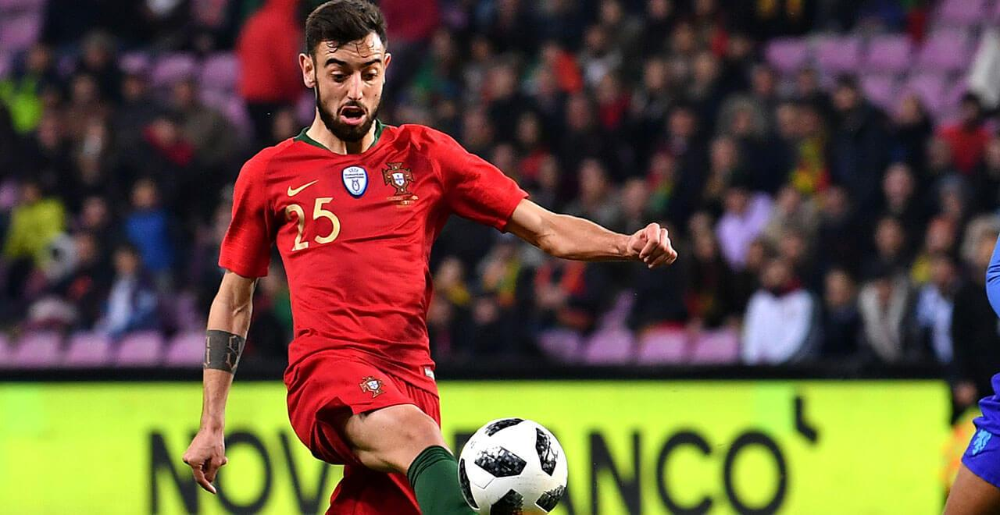

Bruno Miguel Borges Fernandes (sinh ngày 8 tháng 9 năm 1994) là một cầu thủ bóng đá người Bồ Đào Nha thi đấu ở vị trí tiền vệ cho Manchester United ở Ngoại hạng Anh và đội tuyển quốc gia Bồ Đào Nha.
Sinh ra ở Maia, Vùng đô thị Porto, Fernandes chơi hầu hết phần lớn thời còn trẻ cho câu lạc bộ địa phương Boavista FC. Vào ngày 27 tháng 8 năm 2012, anh gia nhập Novara Calcio tại Ý. Chỉ sau vài tuần với đội trẻ, Fernandes đã được thăng hạng lên đội một ở Serie B, và tiếp tục ra sân hơn một nửa số trận đấu trong mùa giải 2012–13, giúp đội của anh ấy đứng thứ 5 và dành vé dự play-off.
Vào mùa hè 2013, Fernandes đã ký hợp đồng với Udinese Calcio trong một thỏa thuận đồng sở hữu cầu thủ. Anh ra mắt ở Serie A vào ngày 3 tháng 11, vào sân trong hiệp hai trong trận thua 0–3 trên sân nhà trước Inter Milan.

Ngày 16 tháng 8 năm 2016, Fernandes chuyển đến U.C. Sampdoria theo một bản hợp đồng cho mượn kèm điều khoản mua đứt. Anh ra mắt giải đấu 12 ngày sau đó, chơi sáu phút trong chiến thắng 2–1 trên sân nhà trước Atalanta BC.
Sau khi trở về từ Giải vô địch bóng đá U-21 châu Âu 2017, ngày 27 tháng 6 năm 2017, Fernandes đã gia nhập Sporting CP trong bản hợp đồng 5 năm, với mức phí khoảng 8,5 triệu euro cộng với tiền thưởng và điều khoản mua lại là 100 triệu euro.
Vào ngày 29 tháng 1 năm 2020, câu lạc bộ Manchester United xác nhận họ đã đạt được thỏa thuận với Sporting về việc chuyển nhượng Fernandes với mức phí được báo cáo lên tới 68 triệu bảng, tùy thuộc vào thành tích của cầu thủ này. Ngày hôm sau, câu lạc bộ chính thức hoàn tất việc ký hợp đồng với Fernandes, mức phí ban đầu khoảng 47 triệu bảng, trong hợp đồng năm năm rưỡi.
Fernandes được gọi lên tuyển lần đầu tiên vào ngày 28 tháng 8 năm 2017, thay thế cho Pizzi bị chấn thương ở chiến dịch vòng loại World Cup gặp Quần đảo Faroe và Hungary mặc dù anh ấy đã không chơi trong cả hai trận đấu.
Fernandes góp mặt cùng đội tuyển Olympic Bồ Đào Nha tham dự Thế vận hội mùa hè 2016. Anh bắt đầu mọi trận đấu, khi giúp đội lọt vào vòng tứ kết.
Fernandes có trận đấu quốc tế đầu tiên vào ngày 10 tháng 11 năm 2017, thay thế cho Manuel Fernandes trong 34 phút cuối trong trận giao hữu với thắng lợi 3–0 trước Saudi Arabia tại Viseu. Sau đó, anh được Fernando Santos chọn tham dự FIFA World Cup 2018 tại Nga. Anh đã ghi bàn thắng đầu tiên vào ngày 7 tháng 6 trong trận đấu tập cuối cùng trước giải đấu lớn đó, mặc dù chịu thất bại 0–3 trước Algeria trên sân Estádio da Luz nhưng anh để lại dấu ấn với 1 bàn thắng bằng đầu hiếm hoi trong sự nghiệp của mình.
Trận đấu World Cup đầu tiên của Fernandes diễn ra vào ngày 15 tháng 6 năm 2018, khi anh chơi 66 phút trong trận hòa 3—3 ở vòng bảng trước Tây Ban Nha.